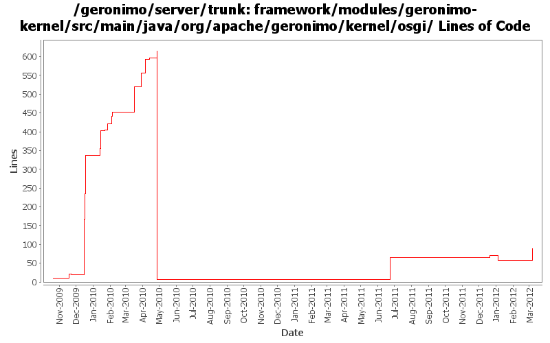

[root]/framework/modules/geronimo-kernel/src/main/java/org/apache/geronimo/kernel/osgi
 jar
(0 files, 0 lines)
jar
(0 files, 0 lines)

| Author | Changes | Lines of Code | Lines per Change |
|---|---|---|---|
| Totals | 66 (100.0%) | 972 (100.0%) | 14.7 |
| gawor | 37 (56.1%) | 843 (86.7%) | 22.7 |
| xuhaihong | 7 (10.6%) | 91 (9.4%) | 13.0 |
| djencks | 20 (30.3%) | 24 (2.5%) | 1.2 |
| rickmcguire | 2 (3.0%) | 14 (1.4%) | 7.0 |
GERONIMO-6295: Jasper does not deal well with bundle:// urls. Convert bundle:// url to jar:// urls when possible
30 lines of code changed in 1 file:
GERONIMO-6249 use extender pattern (in DependencyManager) instead of ConfigurationActivator
0 lines of code changed in 2 files:
GERONIMO-6240 Make several base geronimo functions (kernel, deployer, etc) DS services and make the car-maven-plugin take advantage of that. Server assembly doesn't work yet, builds framework.
12 lines of code changed in 3 files:
GERONIMO-5744: Support for Equinox-specific classloader that can convert bundle:// urls into regular file:// or jar:// urls and make things easier for 3rd party libraries. The Equinox-specific classloader is disabled by default for now
58 lines of code changed in 1 file:
XBEAN-148 use new xbean-bundleutils
0 lines of code changed in 13 files:
Implement hashCode() and equals() for BundleClassLoader.
17 lines of code changed in 1 file:
GERONIMO-4909 The changes just remove the bundle if we unload the car from ConfigurationManager
27 lines of code changed in 1 file:
GERONIMO-5037 Support Servlet 3.0 annotation and fragment web file
64 lines of code changed in 4 files:
No change, code format
0 lines of code changed in 2 files:
make sure BundleClassLoader.getBundle() does not return DelegatingBundle
43 lines of code changed in 2 files:
GERONIMO-5030: Fragment bundles must also be considered when looking up resources
64 lines of code changed in 1 file:
XBEAN-145 make an osgi-friendly annotation finder using xbean-finder and BundleResourceFinder
12 lines of code changed in 2 files:
make sure the callback handler does not close the entire input stream
12 lines of code changed in 1 file:
some updates to BundleResourceFinder and added JarFile facade for a bundle object
7 lines of code changed in 1 file:
extact some code into a separate utility function
77 lines of code changed in 2 files:
GERONIMO-5051: Fix tld discovery at deployment and runtime
62 lines of code changed in 2 files:
some minor updates
2 lines of code changed in 2 files:
add DelegatingBundle that can delegate calls to multiple Bundles and remove classSource support
2 lines of code changed in 2 files:
GERONIMO-5026: first stab at bundle resource finder
56 lines of code changed in 2 files:
GERONIMO-5026: First stab at bundle class finder
18 lines of code changed in 2 files:
copy and paste error
1 lines of code changed in 1 file:
parse out Require-Bundle and Fragment-Host
92 lines of code changed in 1 file:
a few more parsing improvments
48 lines of code changed in 2 files:
Improved API for parsing Import/Export-Package headers. VersionRange class taken from Felix
89 lines of code changed in 4 files:
Improved BundleClassLoader to deletage META-INF resource lookups to wired bundles. Might come useful in some cases
146 lines of code changed in 3 files:
Basic api for parsing bundle manifest and getting information about the bundle. Some portions of the code are borrowed from Aries and Felix projects
7 lines of code changed in 2 files:
do not start fragment bundles - they cannot be started
0 lines of code changed in 1 file:
untabify and implement BundleReference interface
12 lines of code changed in 1 file:
make sure the javax.concurrent.util classes are exported by the framework
10 lines of code changed in 1 file:
some fixes for xbeans problems
4 lines of code changed in 1 file:
override loadClass(String, boolean) method
0 lines of code changed in 2 files: